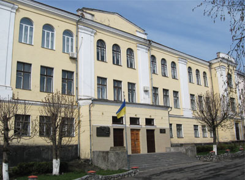
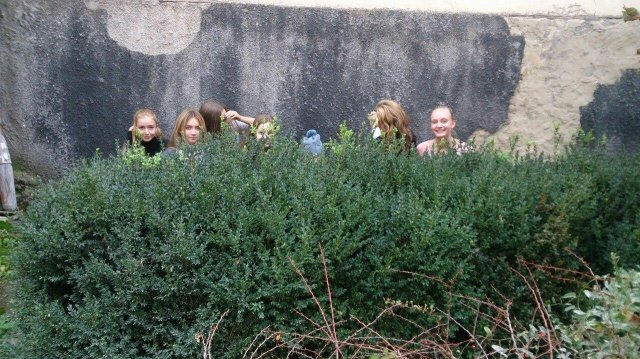
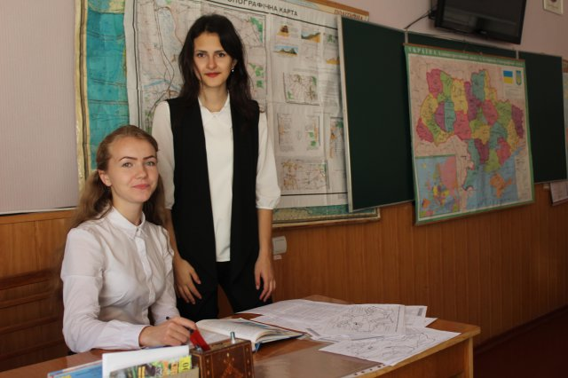
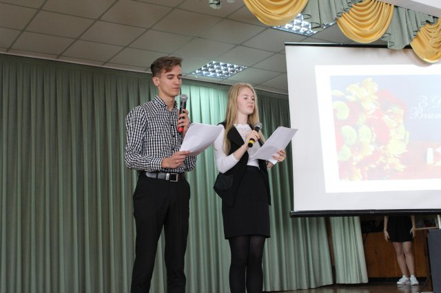
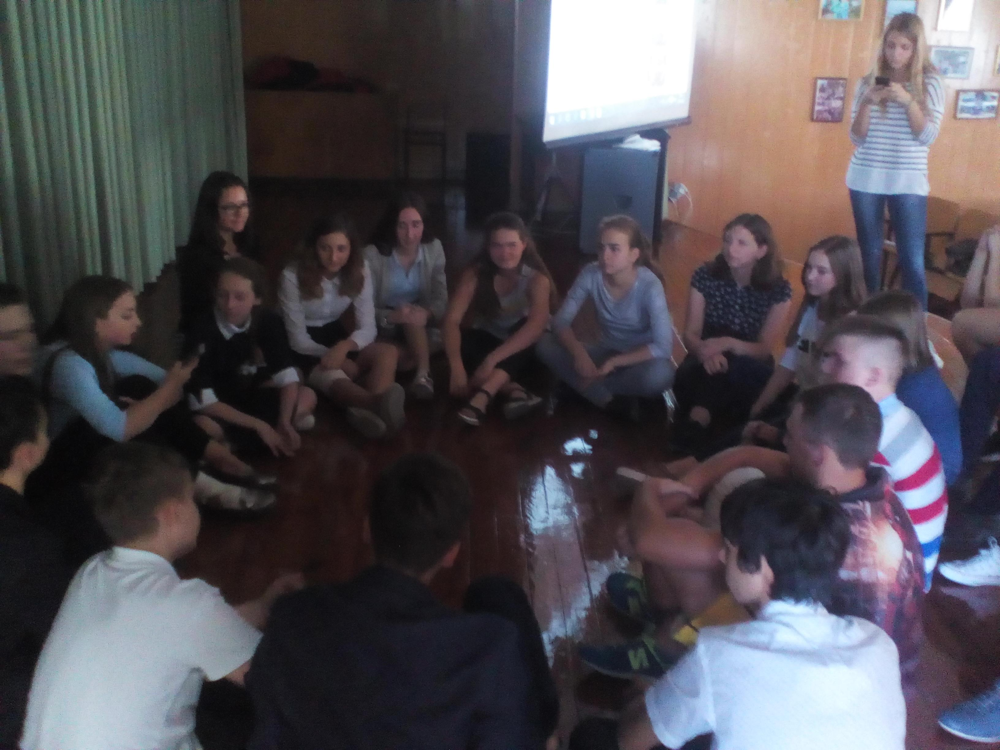
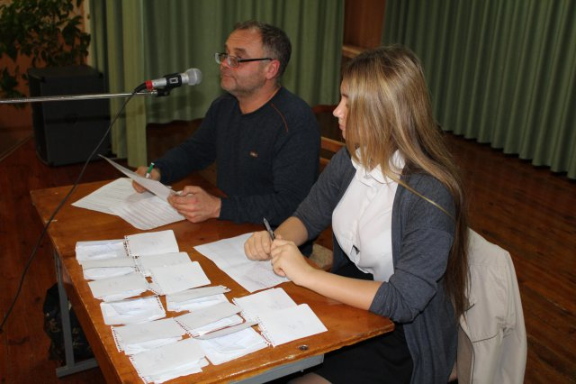

Останні новини
Посвята в ліцеїсти

18 листопада 2016 року о 16.00 в актовій залі ліцею відбудеться посвята в ліцеїсти. Запрошуються учні 1 курсу та їх батьки.
Докладніше
Докладніше
Батьківські збори
Загальноліцейні батьківські збори відбудуться 3 листопада 2016 року о 18.00 год в актовій залі ліцею. Запрошуються усі батьки!
Докладніше
Докладніше
Ліцей Family - фотоквест

7 жовтня діти відкрили для себе ліцей з іншого боку через призму фотоапарату. (Фото – квест).
Докладніше
Докладніше
День дублера

Вже стало гарною традицією – на День Вчителя біля класної дошки стають старшокурсники, в ліцеї відбувся День Дублера.
Докладніше
Докладніше
День вчителя

30.09.2016 р. у ліцеї відбулося святкування Дня Учителя! Учнівське врядування та «Літературна вітальня» підготували для педагогічного колективу чудові концертні номери і веселу виставу.
Докладніше
Докладніше
Ліцей Family - "Хто зверху"

15 вересня відбулася захоплююча гра «Хто зверху?» між учнями ліцею. Перемога дісталась - чоловікам!
Докладніше
Докладніше
Ліцейний тур "Що? Де? Коли?"

7 вересня відбулась ліцейна гра «Що?Де?Коли?». В турнірі прийняли участь 14 команд, різної вікової категорії, різних курсів, спробувати свої сили могли всі бажаючі.
Переможці визначались серед 1 – 2 курсів, та 3 – 4.
Докладніше
Докладніше
Розклад занять ВТЛ